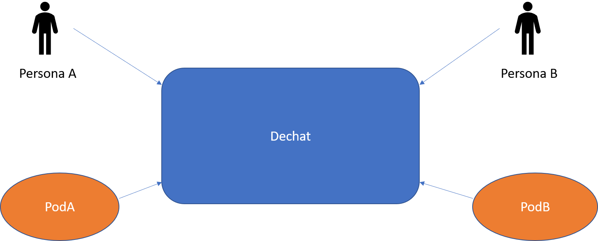

Acerca de arc42
arc42, La plantilla de documentación para arquitectura de sistemas y de software.
Por Dr. Gernot Starke, Dr. Peter Hruschka y otros contribuyentes.
Revisión de la plantilla: 7.0 ES (basada en asciidoc), Enero 2017
© Reconocemos que este documento utiliza material de la plantilla de arquitectura arc 42, http://www.arc42.de. Creada por Dr. Peter Hruschka y Dr. Gernot Starke.
5. Vista de Bloques
La vista de bloques muestra la descomposición estática del sistema en bloques de construcción (módulos, componentes, subsistemas, clases, interfases, paquetes, bibliotecas, marcos de desarrollo, capas, particiones, funciones, macros, operaciones, estructuras de datos,…) así como sus dependencias (relaciones, asociaciones,…)
Esta vista es obligatoria para cualquier documentación de arquitectura. Es la analogía al plano de una casa.
Mantener una visión general de su código fuente haciendo su estructura comprensible de manera abstracta.
Esto permite comunicar a las partes interesades en un nivel abstracto sin entrar en detalles de implementación.
La vista de bloques comprende una colección jerárquica de cajas negras y cajas blancas (ver figura de abajo) y sus descripciones.

Nivel 1 comprende la descripción de Caja Blanca del sistema en general junto con las descripciones de Caja Negra de todos los bloques contenidos.
Nivel 2 hace zoom a los bloques de construcción del Nivel 1. Entonces contiene la descripción de Caja Blanca de los bloques de construcción selecionadas del nivel 1,junto con las descripciones de caja negra de sus bloques de construcción internas.
Nivel 3 Hace zoom a los bloques selectos del nivel 2, y así sucesivamente.
5.1. Sistema General de Caja Blanca

- Motivación
-
Este diagrama representa la vista más global del proyecto
- Bloques de construcción contenidos
| Nombre | Responsabilidad |
|---|---|
Persona |
Usuario usando el chat |
POD |
Desc. en el glosario. |
Dechat |
Aplicación (chat) |
7. Vista de Despliegue
8. Conceptos Transversales (Cross-cutting)
Esta sección describe de manera general, las principales ideas de solución y regulación que son relevantes en multiples partes (→ cross-cutting/transversales) del sistema. Dichos conceptos están relacionados usualmente a múltiples bloques de construcción. Pueden incluir diversos temas, tales como:
-
Modelos de dominio
-
Patrones de arquitectura o patrones de diseño
-
Reglas de uso para alguna tecnología específica.
-
Decisiones técnicas principales o generales
-
Reglas de implementación
Conceptos que forman la base para la integridad conceptual (consistencia, homogeneidad) de la arquitectura. Entonces, son una contribución importante para alcanzar la calidad interna del sistema.
Algunos de estos conceptos no pueden ser asignados a bloques de construcción individuales (por ejemplo seguridad). Este es el lugar en la plantilla provisto para una especificación cohesiva de dichos conceptos.
La forma puede ser variada:
-
Papeles conceptuales con cualquier tipo de estructura
-
Modelo transversal (cross-cutting) de fragmentos o escenarios usando notación de las vistas arquitectónicas
-
Implementaciones de muestra, especialmente para conceptos técnicos.
-
Referencias a uso típico en frameworks estándar (por ejemplo, el uso de Hibernate para mapeo Objeto/Relacional) The form can be varied:
La estructura potencial (pero no obligatoria) para esta sección podría ser:
-
Conceptos de dominio
-
Conceptos de experiencia de usuario (UX)
-
Conceptos de seguridad
-
Patrones de diseño y arquitectura * A potential (but not mandatory) structure for this section could be:
-
Domain concepts
-
User Experience concepts (UX)
-
Safety and security concepts
-
Architecture and design patterns
-
"Bajo el capó"
-
Conceptos de desarrollo
-
Conceptos de operación
Nota: Puede ser difícil asignar conceptos individuales a un tema específico de la lista

12. Glosario
| Término | Definición |
|---|---|
Responsiveness |
En español no encontre una palabra que defina correctamente esta meta, pero su traducción quiere decir que, en este caso el chat, responda ante una acción o que sea sensible a ella |
POD |
POD simula ser una base de datos personal en la que cada uno guarda sus datos y para que las aplicaciones accedan a estos datos, debe ser el propietario del POD el que les de permiso. Puedes ser propietario de este POD o usar uno que proporcione alguna compañia. |